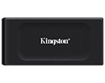
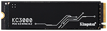
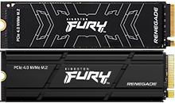
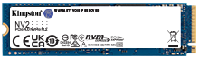
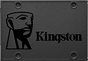
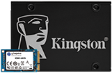
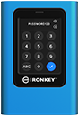

Unidades de estado sólido (SSD) para servidores, ordenadores portátiles y de sobremesa
Desde SATA hasta NVMe, los discos SSD de Kingston ofrecen la velocidad y la fiabilidad que desea para las actualizaciones que necesite.

Disco SDD externo XS1000
- Copia de seguridad de tamaño de bolsillo
- USB 3.2 Gen2
- 1TB, 2TB
- Hasta 1.050 MB/s en lectura Y 1.000 MB/s en escritura

KC3000 PCLe 4.0 NVMe M.2 SSD
- NVMe PCLe 4.0
- Factor de forma M.2 2280
- 512 GB, 1024 GB, 2048 GB, 4096 GB
- Hasta 7.000 MB/s en lectura, 7.000 MB/s en escritura

Kingston Fury renegade PCle 4.0 NVMe
- Ideal para jugadores y entusiastas de la informática
- NVMe PCIe 4.0 2280 M.2
- 500 GB, 1 TB, 2 TB, 4 TB
- Hasta 7.300 MB/s en lectura, 7.000 MB/s en escritura

NV2 PCLe 4.0 NVMe SSD
- Ideal para portátiles y equipos PC de pequeño factor de forma
- NVMe PCIe 4.0 2280 con factor de forma M.2
- 250 GB, 500 GB, 1 TB, 2 TB, 4 TB
- Hasta 3.500 MB/s en lectura y 2.800 MB/s en escritura

SSD SATA A400
- 2,5"
- 240 GB, 480 GB, 960 GB
- Hasta 500 MB/s en lectura y 450 MB/s en escritura

SSD KC600 de 2,5" y mSATA
- Compatible con paquetes de seguridad integrales
- Factores de forma de 2,5" y mSATA
- 256 GB, 512 GB, 1 TB, 2 TB
- Hasta 550 MB/s en lectura y 520 MB/s en escritura

Unidad de estado solido (SSD) externa XS2000
- Portabilidad de tamaño de bolsillo
- USB 3.2 Gen 2x2
- 500GB, 1TB, 2TB, 4TB
- HHasta 2.000 MB/s en lectura, 2.000 MB/s en escritura

Kingston ironKey Vault Privacy 80 SSD externo
- Modo de cifrado XTS-AES de 256 bits
- NUSB 3.2 (1.ª generación)
- 960 GB, 1920 GB, 3840 GB, 7680 GB
- Hasta 250 MB/s de lectura y 250 MB/s de escritura